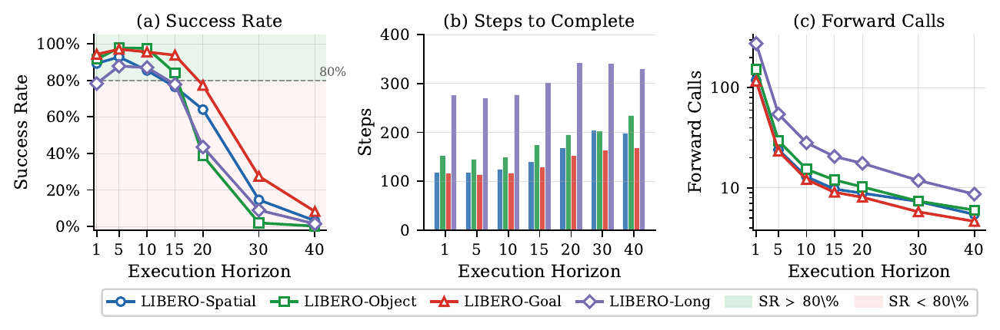

EXPLORING EMBODIED INTELLIGENCE
你好，我是 INCEPTIONwang
让智能，
走进真实世界。
探索感知、决策与行动之间的可能。
关注具身智能与视觉语言动作模型，
让机器人以更高效、可靠的方式行动。
从一个想法，到一次真实的行动。
FIELD NOTES / 001 FROM VISION TO ACTION
感知 → 决策 → 行动π(a | o, l)
Small steps. Real-world intelligence.
RESEARCH INTERESTS
Embodied AI ✳ Vision-Language-Action ✳ Reinforcement Learning
01 /
关于我
A LITTLE CONTEXT从「看懂」到「做到」，
智能还需要跨越行动的距离。
这里记录我围绕具身智能的开源探索：如何让视觉语言动作模型做出可靠的决策，在更少的推理与执行步骤中完成任务。
近期项目聚焦两个互补的方向——提升策略本身的执行效率，以及根据当前状态，自适应地决定下一次行动的长度。
查看全部公开仓库02 /
2026 — ONGOING EXPLORATION研究与项目
SELECTED WORK

03 /
保持联系
LET’S CONNECT下一次探索，
从一次交流开始。
欢迎围绕具身智能、VLA 与开源项目交流想法。